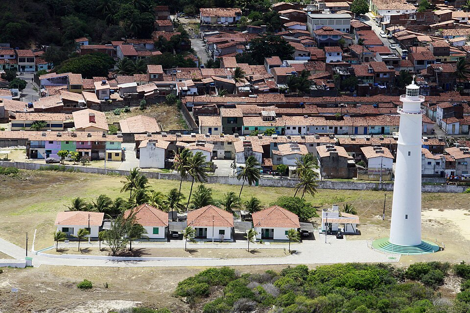
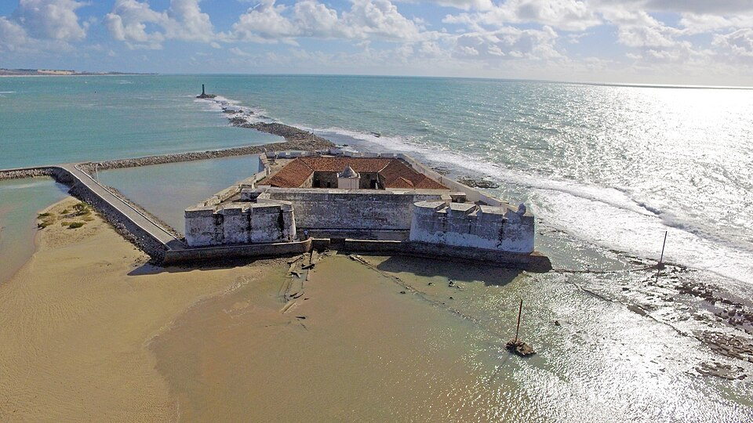
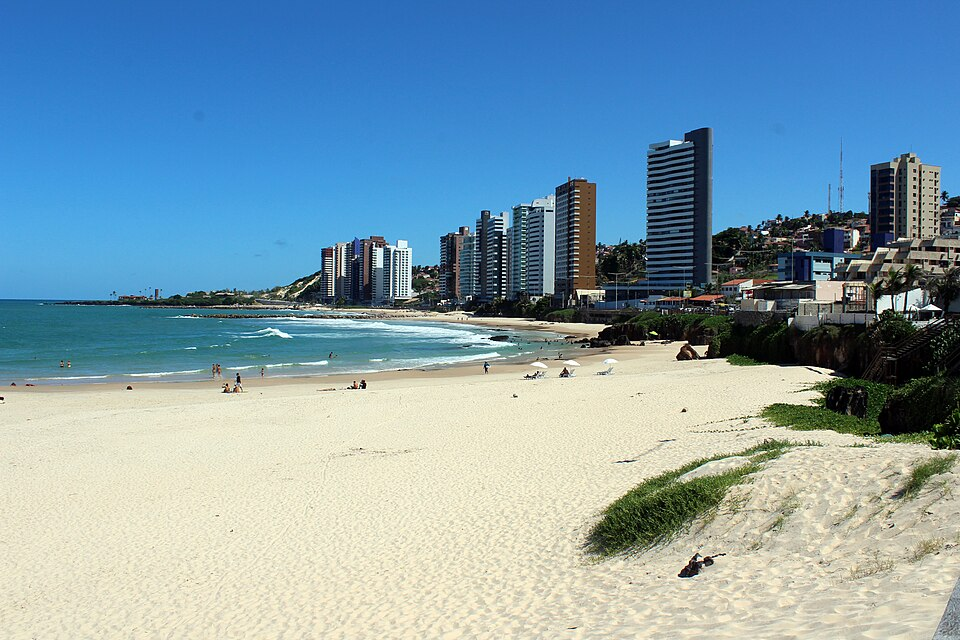

Farol de Mãe Luiza

O Farol de Mãe Luiza, como é mais conhecido o Farol de Natal, é um equipamento de sinalização marítimo localizado na cidade brasileira de Natal.
Forte dos Reis Magos

Vista aérea do Forte dos Reis Magos, construção histórica de paredes brancas localizada sobre uma faixa de areia entre o mar e o estuário.
Praia dos Artistas

Vista da Praia dos Artistas, em Natal (RN), com extensa faixa de areia clara banhada por águas azul-esverdeadas.